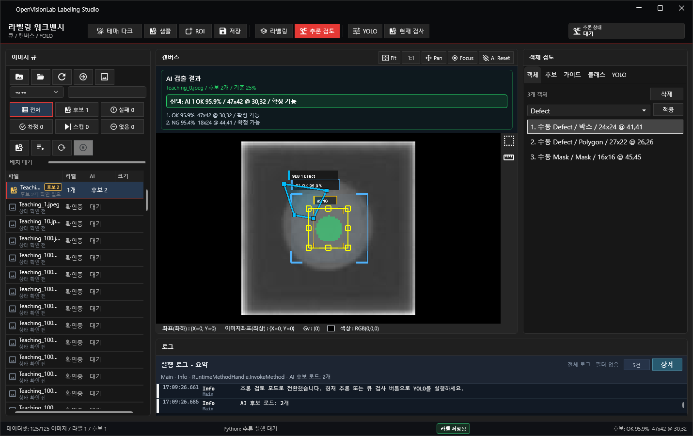
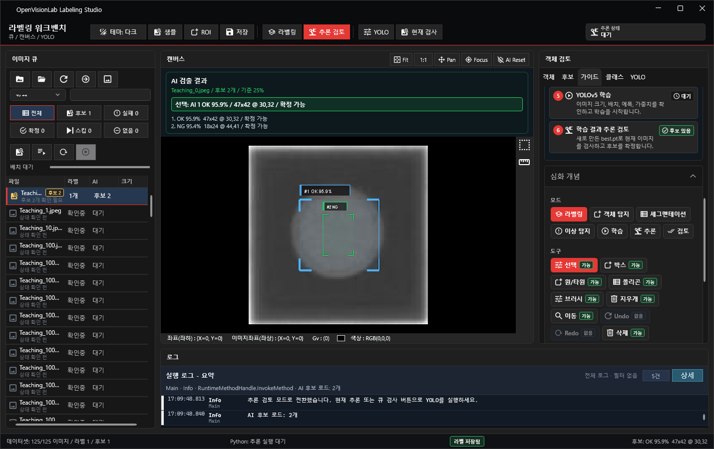
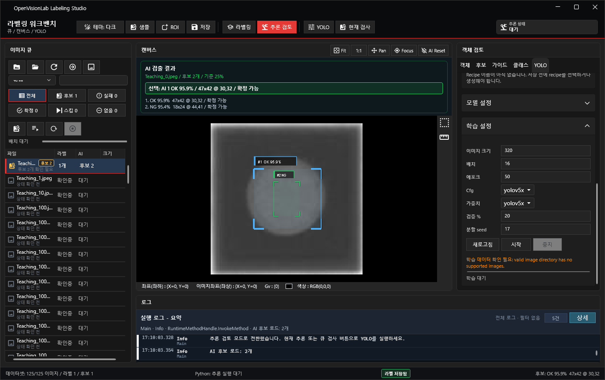
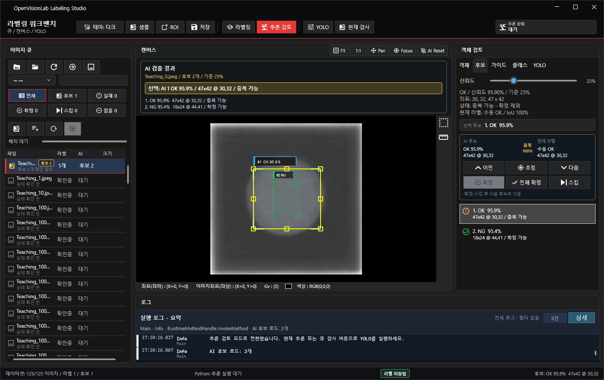

프로그램 안에서는 오른쪽 가이드 탭의 처음 10분 튜토리얼 카드와 YOLOv5 학습 순서를 같이 보면 됩니다.
1
가이드에서 전체 흐름 확인
오른쪽 가이드 탭
처음에는 화면 오른쪽의 가이드 탭을 봅니다. 여기서 오늘 해야 할 흐름을 먼저 잡습니다.
- 샘플 이미지 또는 이미지 폴더를 엽니다.
- 클래스, 라벨, 데이터셋 점검, 학습, 추론 순서로 진행합니다.
- 단계 카드를 누르면 해당 작업 화면으로 이동합니다.

2
이미지 큐에서 작업할 이미지 선택
왼쪽 이미지 큐
이미지 폴더를 열면 왼쪽 큐에 파일이 들어옵니다. 한 번 클릭하면 중앙 캔버스가 바로 해당 이미지로 바뀝니다.
- 상단의
샘플또는 폴더 버튼으로 이미지를 불러옵니다. - 큐의 선택 줄이 현재 캔버스 이미지입니다.
- 후보, 실패, 확정 같은 필터로 검토 대상을 줄일 수 있습니다.

3
클래스 등록
오른쪽 클래스 탭
라벨을 그리기 전에 모델이 배울 이름을 먼저 만듭니다. 예시는 OK, NG처럼 단순하게 시작합니다.
- 오른쪽 클래스 탭으로 이동합니다.
- 클래스 이름을 추가하고 저장 경로를 확인합니다.
- 이 목록이 YOLO 라벨의 class index 기준이 됩니다.

4
박스 라벨링 후 저장
라벨링 모드
중앙 캔버스에서 객체를 박스로 표시합니다. 저장하면 YOLO 형식의 txt 라벨이 생성됩니다.
- 상단
라벨링모드와ROI또는 박스 도구를 사용합니다. - 박스를 그린 뒤 오른쪽 객체 목록에서 클래스가 맞는지 확인합니다.
저장을 눌러 현재 라벨을 파일로 남깁니다.

5
YOLO 설정과 데이터셋 점검
YOLO 탭
학습 전에 Python, YOLOv5 경로, weights, 이미지 루트, 패키지 상태를 확인합니다.
첫 점검으로 누락된 경로나 패키지를 확인합니다.- 데이터셋 문제가 있으면 가이드 카드의
클래스 등록,라벨링 시작,데이터셋 점검으로 돌아갑니다. - 데이터셋 점검이 통과하면 학습 설정의
시작을 누르고, 진행률은 같은 YOLO 탭에서 봅니다. - 학습을 돌린 뒤에는 새로 생긴
best.pt를 적용하고 설정을 저장합니다.

6
추론 실행과 후보 검토
추론 검토 모드
추론을 누르면 상단에 진행 상태가 보이고, 완료 후 중앙 캔버스는 결과 이미지가 보이도록 다시 맞춰집니다.
현재 검사로 현재 이미지 하나를 검사합니다.- 오른쪽 후보 탭에서 AI 후보를 확인합니다.
- 정답이면 확정, 틀리면 스킵하고 다음 후보로 넘어갑니다.
